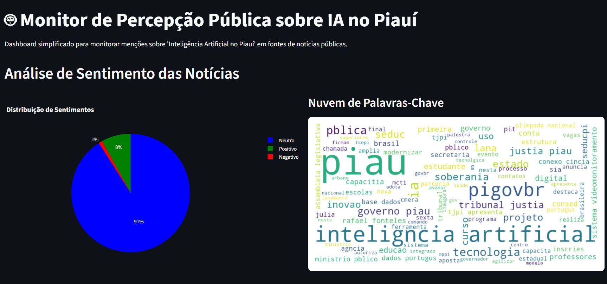
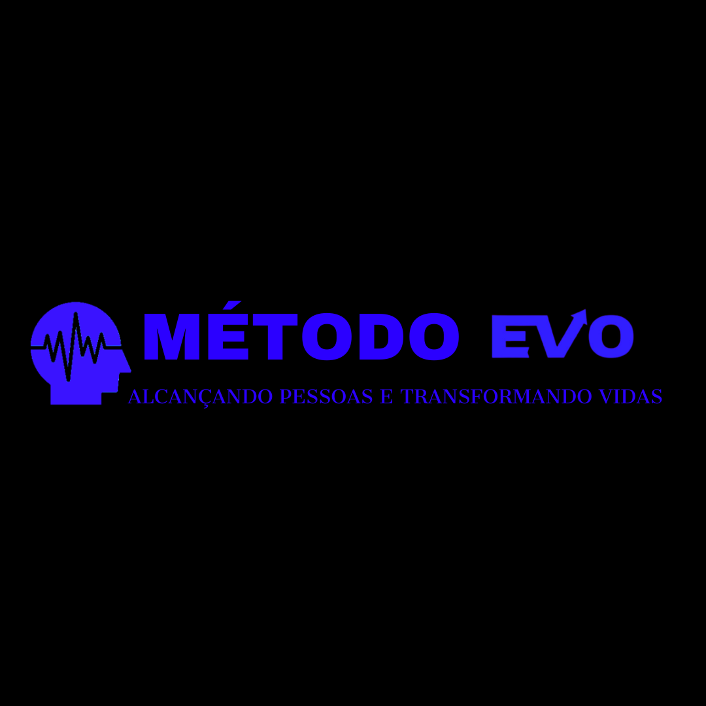
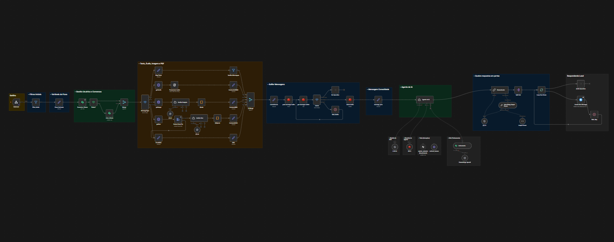
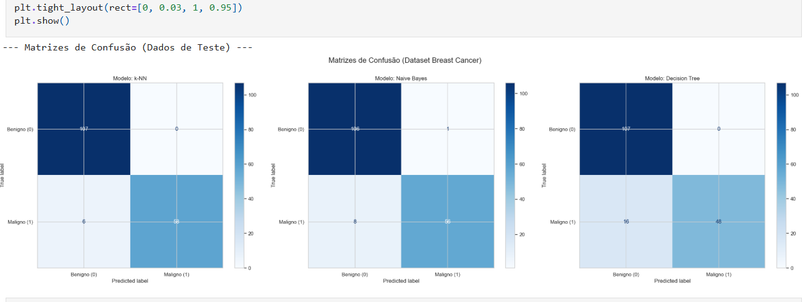

Graduando em Sistemas para Internet com atuação prática em Python, Automação Ágil e Produtos Digitais. Especialista em integrar Inteligência Artificial para análise de dados e otimização de processos, construindo backends robustos e soluções de alto impacto para negócios.
Python, JavaScript, SQL e C++
Domínio da base computacional com Python, JavaScript e SQL. Foco em arquitetura de software, manipulação de banco de dados e engenharia de dados. Experiência na criação de dashboards e scripts robustos para escalar aplicações com segurança.
Ecossistema Low-Code & UX/UI de Alta Conversão
Construindo fluxos ultra-rápidos através do n8n e integrando APIs para eliminar gargalos operacionais. Experiência prática (como o lançamento do Método EVO) unindo código, regras de negócio complexas e interfaces de alta conversão.
Meu maior diferencial é a adaptabilidade. Não sou apenas um codificador; mergulho no modelo de negócio da empresa para automatizar rotinas, criar agentes de IA e entregar resultados seja no Backend, Dados ou estruturação de Produtos.

Dashboard de Inteligência para monitoramento de notícias tecnológicas no Piauí. Foco profundo na mineração de dados e visualização estratégica da informação fragmentada, atuando como base sólida para decisão.

Plataforma digital construída de ponta a ponta. Integra Landing Page desenvolvida com intenso foco em conversão e UX, interligada a integrações de pagamentos e gestão de acesso fluida e otimizada.

Fluxos super avançados de triagem de usuários via WhatsApp. Integra nativamente a OpenAI API via n8n para compreensão do natural language e direcionamento dinâmico e inteligente da carga operacional.

Análise crua de hardware e software. Projeto acadêmico de profunda base sistêmica de arquitetura de computadores criada em C++ puro, aliada à análise de gargalos performáticos calculados com Python.
Não sou apenas um usuário final de IA. Eu planejo, escrevo e orquestro sistemas onde Inteligências Artificiais Generativas interagem com ambientes reais, atuam sobre APIs e tomam ações determinísticas estruturadas.
system_prompt="Extração Estruturada"
Desenho instruções contextuais avançadas para extrair o máximo de LLMs. Foco na extração de dados estruturados (JSON), análise de sentimento, raciocínio lógico e geração de respostas que respeitam estritamente as regras de negócio.
Function Calling & Tools
Desenvolvimento de Agentes de IA via n8n/Python. Crio fluxos como triagem automatizada via WhatsApp e assistentes de processos internos, reduzindo drasticamente o tempo operacional de equipes reais.